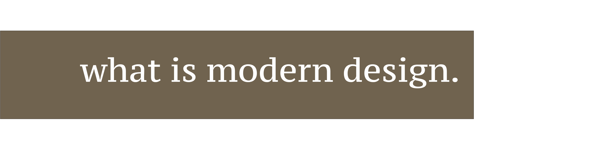
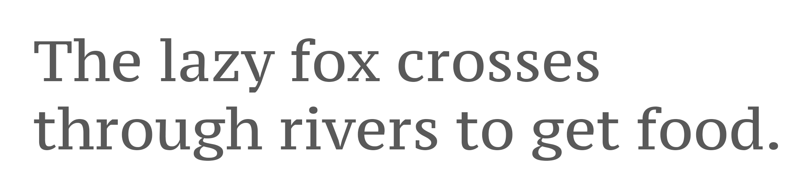
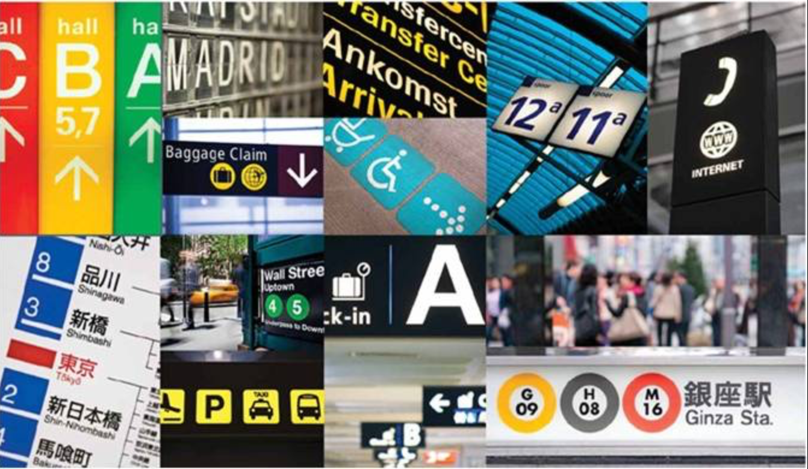
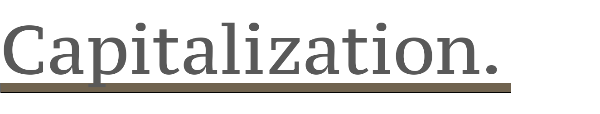
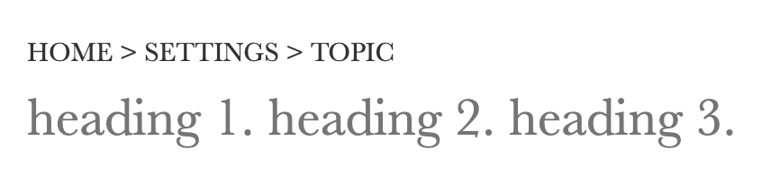
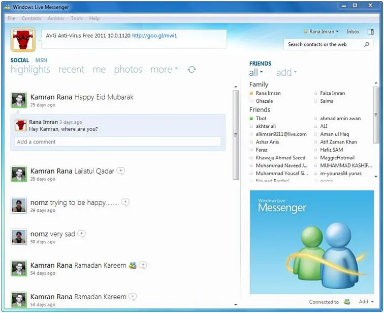
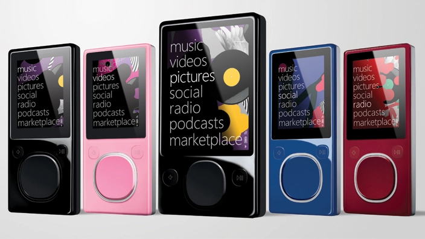
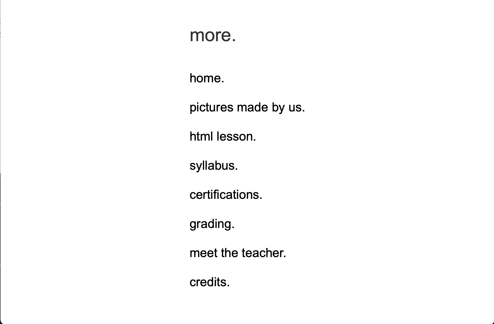

Learning Modern Design.
ARIEL ARAYA - NOVEMBER 12TH
NAVIGATION

Designing the new age of computers is hard. You need to make sure that everything is accessible to everyone, find a design that's like eye-candy to look at. Everything from the font used (both in CSS and Photoshop), the colors (a darker shade, promoting mood), and capitalization (like the 'NAVIGATION' text on the beginning of the page).
Fonts were a giant part of the design process, you don't want to use regular fonts like Times New-Roman or Arial (or any other overused font), in the beginning, I thought about accessibility, what would be easy to read and what would cause the least eye-strain. I realized that I needed a serif font. You could see it everywhere from newspapers, signs, most things that display importance uses serifs. The font in question is Roboto Slab. The font feels nice reading and even zoomed in feels great. On Adobe Photoshop, its a different question though.
The lazy fox crosses through rivers to get food.
On Photoshop, the font Roboto isn't available out of the box (maybe with an extra install but nobody wants to do that) so I had to improvise. I ended up going with a similar but not quite the same font called PT Serif Caption.

The main guideline is for text like this, you'd use the heading 4 tag in html or the 36pt in Photoshop on the subheadings (some cropping might also be required). You could use the examples below to learn more about the design.
Color is very important in this new world. It's boring to just look at white black and grey. It makes the user feel uninterested, mostly if they just came from another website with the same white black grey color paddlet. So for this new design, I took inspiration on the colors of signs and other objects that gives ease.

Most colors that require attention are darker colors, and it makes sense if you think about it. Our eyes see color using three color receptors that in the Computer Science field we know as RGB or Red Green and Blue. The more sudden stimuli that these receptors get, the more short term attention the user gets.
These colors give an extra tone to what the website is about, it gives the person a colorful feel and really shines in banners or backgrounds. It gives this suttle "its okay to touch" feeling to it. the colors themselves (in order of the image above) are #422727, #61482f, 40305d, and #555141.

Capitailization is key to giving people a sense of knowing where they are. Its not a way to catch their attention as much as it is a way for the user to know the hierarchy of the sites. For example lets say that the user goes from home to the settings page, to a topic page, it should look a little something like this.

You might notice a pattern when it comes to Modern Design, and that is that it is very hierarchical and that its easy to know where you are in a page. I wanted it to be about being decluttered and simple. One rule of thumb is to capitalize only in the starting screen and no more when the user scrolls down.
Modern Design has been studied before by companies like Microsoft with their Metro design back in 2012. So apps in the wild with Modern Design aren't that hard to find. Windows Live Messenger had this design back in 2012 before being discontinued that same year

You could see the inspiration in the navigation and the design cues perfected for web, making it great for the new era of computing. Another example is Metro on the Microsoft Zune where you could see the capitalization in menus.

I took the Microsoft Zune Design and made it to a website that would display options using vertical scrolling. This was my prototype and I didn't exactly nail the periods or the font at the end. The periods should only be used in the title.

This design was made using Simple.css, a stylesheet that I wrote back in 2020 based on the w3.css framework. meaning that most of it is heavylifted off of that. I attached a .zip folder with with the files to this very website. Everything from the Photoshop projects, to the HTML itself and everything in between is in this folder. Lets go a bit deeper.
The design is based in containers (w3.css). These containers are meant to space between what the user can view and helps the text have a style of indentation. Note: You can choose to not use the containers/not use simple.css but it looks off... I recommend using it.
The designed text (like the ribbons) are images in Photoshop. So it's easy to get in, manipulate the image, and put it on your website. Note: I do recommend putting them in the /images folder for simplicity but as long as it works, you're fine.
Download the folder
Thank you for learning about this design, if you do use the design, please e-mail me the site! I'd love to see it!
Copyright 2022; Made by Ariel. All rights reserved. For more info, view lines 18-19 of the page source.
*